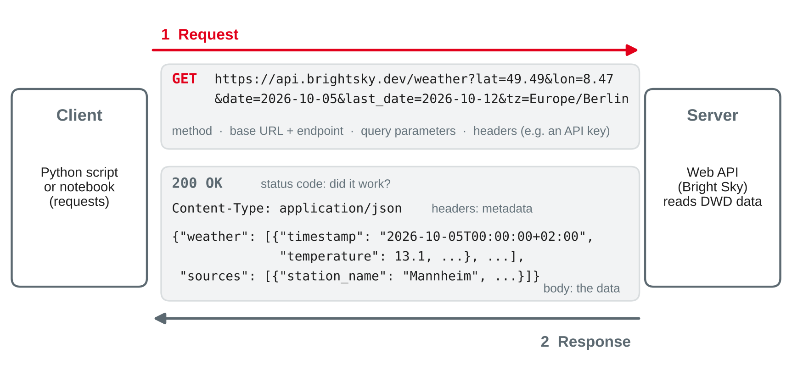
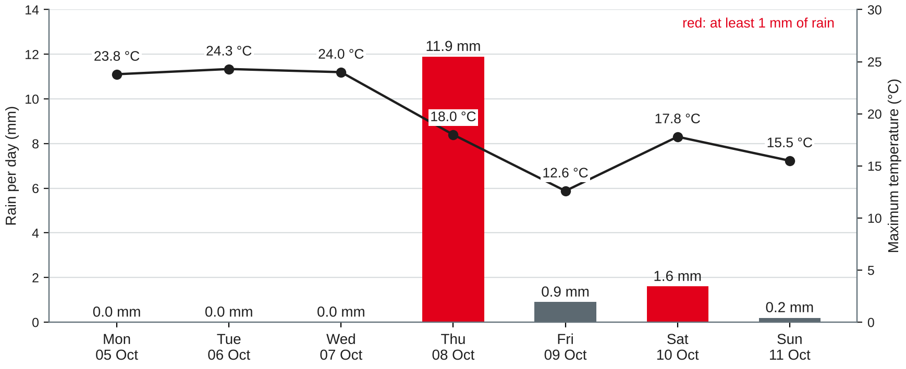

Data Management
Reading CSV, Excel and JSON · REST APIs and JSON · calling APIs from Python · authentication and rate limits
DHBW · Digital Business Management (Business IT) · Semester 2
Your preparation: does import requests work? Which open data source did your team find — and in which format does it come?
Session 14 of this course; Rahm and Do (2000).
| File | Content | Format |
|---|---|---|
bikeshop-pricelist-s1-session15.csv | price list of supplier S1, Rad-Großhandel Süd | CSV, German export |
bikeshop-pricelist-s2-session15.xlsx | price list of supplier S2, E-Motion Parts | Excel, two sheets |
repair_job_doc in bikeshop.db | the 12 repair job documents of session 11 | JSON in SQLite |
| Bright Sky weather API | hourly weather in Mannheim, 5–11 October 2026 | JSON over HTTP |
brightsky-mannheim-2026-10-05.json | saved copy of the API response (fallback) | JSON file |
Own example based on the bike shop case; supplier data fictional. Weather data: Deutscher Wetterdienst via de Maeyer (n.d.).
Every format has its own traps
| Format | pandas | Typical traps |
|---|---|---|
| CSV, TXT | pd.read_csv | separator, decimal comma, encoding, leading zeros, placeholders |
| Excel (.xlsx) | pd.read_excel | title rows, several sheets, footnotes, text in number columns |
| JSON | json.load + pd.json_normalize | nesting, missing keys, records hidden in a sub-object |
| SQL database | pd.read_sql | type affinity: a key with NULL becomes float (session 14) |
| Parquet | pd.read_parquet | needs pyarrow; types are stored — fewest traps |
shape, dtypes and head() after every loadpython -m pip install openpyxlBased on McKinney (2022, Chapter 6) and pandas development team (n.d.-a, n.d.-c).
Artikel-Nr.;Bezeichnung;Ihre Teile-Nr.;Preis netto;VPE;Gültig ab;Lagerbestand 004711;Schlauch 28" Dunlop-Ventil;P-101;3,05;10;01.04.2027;1.250 000815;Bremszug Edelstahl;P-106;1,65;25;01.04.2027;- 012041;"Kette 11-fach; mit Kettenschloss";P-105;21,40;5;01.04.2027;96 099017;Werkstattkoffer Profi;;1.189,00;1;15.04.2027;2
pd.read_csv("bikeshop-pricelist-s1-session15.csv")
# UnicodeDecodeError: 'utf-8' codec can't decode byte 0xfc ... ← 'ü' in Windows-1252
pd.read_csv("bikeshop-pricelist-s1-session15.csv", encoding="cp1252")
# shape (8, 1): the whole line is one column — the separator is ';', not ','; and ,"Kette 11-fach; mit Kettenschloss"Own example (fictional supplier price list); Shafranovich (2005); McKinney (2022, Chapter 6).
s1 = pd.read_csv("bikeshop-pricelist-s1-session15.csv",
sep=";", encoding="cp1252",
decimal=",", thousands=".",
dtype={"Artikel-Nr.": str}, # keep '004711', not 4711
na_values=["-"], # '-' means: unknown stock
parse_dates=["Gültig ab"], date_format="%d.%m.%Y")
s1.dtypes # Artikel-Nr. str · Preis netto float64 · Gültig ab datetime64 · Lagerbestand float64
s1["Preis netto"].sum() # 1258.95 — '1.189,00' read as 1189.0| Without the option | Result |
|---|---|
dtype={"Artikel-Nr.": str} | 004711 → 4711: the supplier's article number is broken |
decimal=",", thousands="." | prices and stock stay text; '1.250' would be 1.25 with decimal only |
na_values=["-"] | Lagerbestand stays text because of two '-' |
Own example (fictional supplier price list); pandas development team (n.d.-a); McKinney (2022, Chapter 6).
pd.ExcelFile("bikeshop-pricelist-s2-session15.xlsx").sheet_names # ['Price list', 'Discounts']
pd.read_excel("bikeshop-pricelist-s2-session15.xlsx").columns[0]
# 'E-Motion Parts GmbH · Price list 2027' ← the title row became the header
s2 = pd.read_excel("bikeshop-pricelist-s2-session15.xlsx", sheet_name="Price list",
header=3, nrows=5) # header in row 4, five products
s2.dtypes # Price EUR object: one price is the text 'on request'
pd.to_numeric(s2["Price EUR"], errors="coerce") # 449.0 559.0 89.9 14.5 NaNsheet_name=None reads all sheets into a dictionary of DataFramesOwn example (fictional supplier price list); pandas development team (n.d.-b); McKinney (2022, Chapter 6).
import json
with open("brightsky-mannheim-2026-10-05.json", encoding="utf-8") as f:
data = json.load(f) # JSON object → Python dict
data.keys() # dict_keys(['weather', 'sources'])
len(data["weather"]) # 169 — a list of records (array of objects)
data["sources"][0]["station_name"] # 'Mannheim'| JSON | Python | pandas |
|---|---|---|
object {"a": 1} | dict | one row, or nested columns a.b |
array [...] | list | rows (records) |
"text", 1.5, true, null | str, float, True, None | str, float64, bool, NaN |
pd.DataFrame(data["weather"]) → 169 rows, 9 columnspd.read_json(...) on this file: ValueError: All arrays must be of the same lengthBased on Bray (2017) and McKinney (2022, Chapter 6); weather data: Deutscher Wetterdienst via de Maeyer (n.d.).
docs = [json.loads(d) for (d,) in con.execute("SELECT doc FROM repair_job_doc")]
jobs = pd.json_normalize(docs) # 12 rows: one per job
jobs.columns # job_no, date, …, lines, mechanics, bike.brand, bike.owner.name, …
lines = pd.json_normalize(docs, record_path="lines", meta=["job_no", "date"])
lines.shape # (16, 6): one row per repair line, job_no and date copied inbike.owner.namerecord_path; meta copies fields of the parentlines, like an inner joinmeta=[["bike", "owner", "name"]] fails with KeyError for job 507 (no owner) — errors="ignore" gives NaNOwn example based on the bike shop documents of session 11; pandas development team (n.d.-d).
What do you write — and what goes wrong without it?
Datum;Betrag;IBAN with 01.03.2027;-1.234,56;DE89…{"count": 312, "results": [{…}, {…}]}01067 and the placeholder unknownexport.csv that shows Müller instead of Müller when you open ititems; you need one row per itemData on request
Interface
An application programming interface lets one program use data or functions of another — over the web via HTTP.
Contract
The documentation says which requests exist, which parameters they take and what the response looks like.
Machine-readable
Responses are structured data, mostly JSON — not web pages for people.
| File download | Web API |
|---|---|
| everything, as of the export date | only what you ask for, as of now |
| a person exports and sends it | a program asks — on a schedule if needed |
| format agreed once | format documented, versioned, can change |
Based on McKinney (2022, Chapter 6) and Fielding (2000, Chapter 5).
/weather, /customers/101, /customers/101/orders| HTTP method | Meaning | SQL counterpart |
|---|---|---|
GET | read a resource | SELECT |
POST | create a new resource | INSERT |
PUT / PATCH | replace / change a resource | UPDATE |
DELETE | remove a resource | DELETE |
Based on Fielding (2000, Chapter 5) and Fielding et al. (2022).

Own illustration based on Fielding (2000, Chapter 5) and Fielding et al. (2022); example request to de Maeyer (n.d.).
| Code | Meaning | What the client should do |
|---|---|---|
| 200 OK | success; the body has the data | parse the body |
| 400 Bad Request | the request is malformed | fix the request |
| 401 Unauthorized | no or invalid credentials | check the API key or token |
| 403 Forbidden | known, but not allowed | ask for access; do not retry |
| 404 Not Found | no such resource | check endpoint and IDs |
| 422 Unprocessable Content | parameters invalid, e.g. lat=500 | fix the parameters |
| 429 Too Many Requests | rate limit reached | wait (Retry-After), then retry |
| 500 / 503 | error / overload on the server | retry later, with a pause |
Based on Fielding et al. (2022, Section 15) and Nottingham and Fielding (2012, Section 4).
Extract of the Bright Sky documentation for GET /weather:
| Parameter | Description |
|---|---|
date | required; first timestamp, ISO 8601 (2026-10-10, optionally with time) |
last_date | last timestamp; default: date + 1 day |
lat, lon | position in decimal degrees; both needed unless a station ID is given |
tz | time zone of the timestamps; default UTC |
units | dwd (default: °C, mm, km/h) or si |
date=10.10.2026. Which class of status code do you expect, and who must fix the problem?"wind_speed": 20.5. In which unit — and what changes with units=si?Extract adapted from de Maeyer (n.d.).
requests, JSON and a plan B
import requests
URL = "https://api.brightsky.dev/weather"
params = {"lat": 49.49, "lon": 8.47, "date": "2026-10-05",
"last_date": "2026-10-12", "tz": "Europe/Berlin"}
r = requests.get(URL, params=params, timeout=10) # never without timeout
r.status_code # 200
r.raise_for_status() # raises HTTPError for 4xx and 5xx, else nothing
data = r.json() # body → dict, as json.load
r.url # …/weather?lat=49.49&lon=8.47&date=2026-10-05&last_date=2026-10-12&tz=Europe%2FBerlinparams builds and encodes the query string — no string gluingtimeout, a hanging server makes your script wait foreverr.json() also works on an error body — check the status firstBased on Requests (n.d.) and McKinney (2022, Chapter 6); API: de Maeyer (n.d.).
w = pd.DataFrame(data["weather"]) # 169 rows
w["timestamp"] = pd.to_datetime(w["timestamp"]) # datetime64[us, UTC+02:00]
w["day"] = w["timestamp"].dt.date
w["wet"] = w["precipitation"] > 0
daily = w.groupby("day").agg(rain_mm=("precipitation", "sum"),
wet_hours=("wet", "sum"),
t_max=("temperature", "max"),
records=("timestamp", "size"))| day | rain_mm | wet_hours | t_max | records |
|---|---|---|---|---|
| 2026-10-07 | 0.0 | 0 | 24.0 | 24 |
| 2026-10-08 | 11.9 | 10 | 18.0 | 24 |
| 2026-10-09 | 0.9 | 2 | 12.6 | 24 |
| 2026-10-12 | 0.0 | 0 | 8.0 | 1 |
Own example; weather data: Deutscher Wetterdienst via de Maeyer (n.d.), CC BY 4.0; McKinney (2022, Chapter 10).

Own illustration; data: Deutscher Wetterdienst via de Maeyer (n.d.), CC BY 4.0, station Mannheim, hourly values summed per day (local time).
last_date is includedtz, everything is UTC — "Thursday" starts at 02:00 German timedwd) or m/s (si); precipitation over the previous hourcondition 'rain' but 0.0 mm precipitationsources part says which station measured — Mannheim, 6.6 km awayOwn example; de Maeyer (n.d.); data quality dimensions after Wang and Strong (1996).
import json, requests
try:
r = requests.get(URL, params=params, timeout=10)
r.raise_for_status()
data = r.json()
with open("weather-raw-2026-10-05.json", "w", encoding="utf-8") as f:
json.dump(data, f) # keep the raw data
except requests.RequestException as e: # no network, timeout, 4xx, 5xx
print("API not available:", type(e).__name__, "– using the saved copy")
with open("brightsky-mannheim-2026-10-05.json", encoding="utf-8") as f:
data = json.load(f)RequestException catches connection errors, timeouts and HTTP errors from raise_for_status()Based on Requests (n.d.); Rahm and Do (2000); own example.
Who may ask — and how often
| Method | How it works | Example |
|---|---|---|
| None | anyone may call | Bright Sky, many open data APIs |
| API key | a secret string in a header or parameter | headers={"X-API-Key": key} |
| OAuth 2.0 token | a token from an authorisation server, often short-lived | headers={"Authorization": "Bearer …"} |
import os
key = os.environ["CARSHARE_API_KEY"] # not in the notebook, not in git
r = requests.get(URL, headers={"X-API-Key": key}, timeout=10)
# without a valid key: 401 Client Error: Unauthorized.gitignore — never in code, slides or repositoriesBased on Hardt (2012) and Fielding et al. (2022, Section 11); own example.
Retry-After: <seconds>?page=2 or a next link — loop until there is no next pagepage, rows = 1, []
while page:
r = requests.get(URL, params={"page": page}, headers=h, timeout=10)
if r.status_code == 429:
time.sleep(int(r.headers.get("Retry-After", "60"))); continue
r.raise_for_status()
body = r.json(); rows += body["data"]; page = body["next_page"]Based on Nottingham and Fielding (2012), GitHub (n.d.) and Requests (n.d.); own example.
Before you build on a source: who provides it, which licence, how stable is it, and what if it disappears?
Based on Deutscher Wetterdienst (2024), Creative Commons (n.d.) and de Maeyer (n.d.).
| Style | Idea | When you meet it |
|---|---|---|
| Bulk download | one big file (CSV, Parquet, ZIP) per period | statistics offices, open data portals |
| GraphQL | one endpoint; the client describes which fields it wants | modern web platforms |
| SOAP / XML | strictly defined messages with an XML schema | banks, public administration, older ERP systems |
| Streams, webhooks | the server pushes new events | payments, IoT, order notifications |
| Database connection | SQL directly on the source system | internal systems (session 16) |
Own compilation based on McKinney (2022, Chapter 6) and Fielding (2000).
New notebook. Predict first, then run. Use the live API; if it fails, use the saved copy.
shape and dtypes; parse the timestamps. Which station measured, and how far away is it?condition with precipitation. How many hours disagree, and which field do you trust for "rain"?lat=500, with the endpoint /wetter and without timeout. What does your code do?weather_daily — with the source and licence notedOwn example; API: de Maeyer (n.d.); data: Deutscher Wetterdienst, CC BY 4.0.
Your data source, sample load and quality check are part of milestone 4 (data loading and quality, after session 16).
shape, dtypes, head()json_normalize turns nesting into tablesPreparation: finish the hands-on questions and worksheet 15; keep your weather notebook with the raw JSON and weather_daily; load a sample of your team's data source.